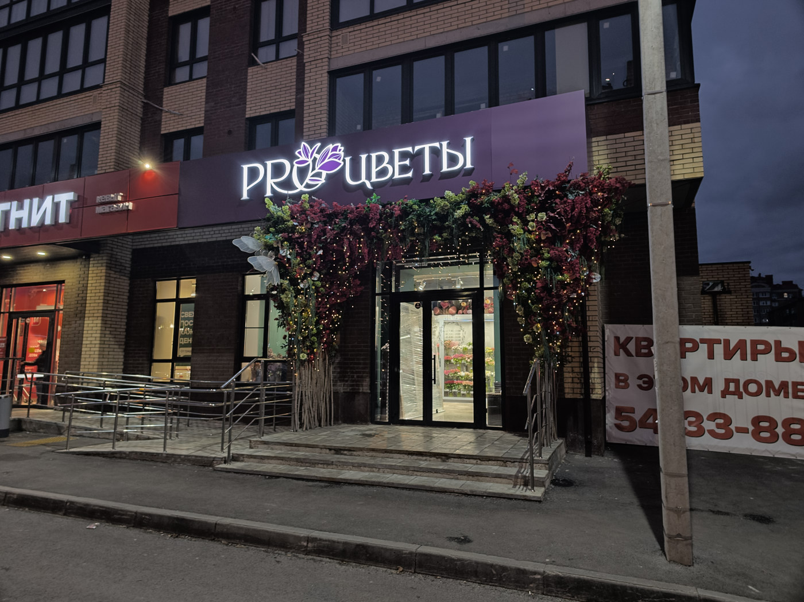

LightCraft Manual Editing Skill
> Навык для ИИ-агента, который редактирует фото в LightCraft 0.21.1 исключительно руками: явные значения слайдеров, реальная геометрия масок, настоящие жесты указателем. Никакого Auto, никакой магии.
Что это
LightCraft — это открытый неразрушающий RAW-редактор (альтернатива Lightroom) со встроенным MCP-сервером. Этот репозиторий — готовый навык для OpenCode / Claude Code / Codex:
~/.config/opencode/skills/lightcraft/
├── SKILL.md # доктрина, рабочий процесс, маршрутизация инструментов, ловушки
├── references/ # 12 справочников, читаются по мере необходимости
└── scripts/ # запуск MCP, запуск приложения, обновление справочников, инвентаризация дополнений
Он охватывает все 392 команды LightCraft, 114 слайдеров, полную схему develop JSON, все семейства масок, удаление точек, Point Color, HDR, склейку брекетов, экспорт и 41 встроенный пресет с их реальными числовыми рецептами.
Установка
git clone https://github.com/ildargiv/lightcraft-manual-skill.git \
~/.config/opencode/skills/lightcraft
Перезапустите агента, чтобы он пересканировал навыки. Требования: LightCraft 0.21.1+, Python 3 (только для вспомогательных скриптов).
Подключение к живому приложению (рекомендуется)
MCP-сервер регистрируется в opencode.json через самовосстанавливающуюся обёртку:
"lightcraft": {
"type": "local",
"command": ["python", "<skills>/lightcraft/scripts/mcp-connect.py"],
"enabled": true
}
mcp-connect.py при необходимости запускает десктопное приложение с --control 7980, затем передаёт stdio в lightcraft-cli mcp --compact --connect 127.0.0.1:7980. Агент получает все инструменты правки плюс живые UI-инструменты: screenshot, click, press_key, pointer_gesture, set_ui, clipboard.
Ручной эквивалент:
powershell -ExecutionPolicy Bypass -File <skills>/lightcraft/scripts/start-lightcraft-app.ps1
Наши достоинства
- Ручная правка как правило, а не пожелание. Прямой запрет на
develop.auto,develop.autoBwMix, Auto WB,crop.autoStraighten,geometry.upright auto,spot.findDust/findBlemishes,lensBlur.findSubject,preset.apply,develop.sync/autoSync,develop.matchExposure. Для каждого запрета указана ручная замена — явные числа и координаты. - Полный охват программы. 392 команды с параметрами, 114 слайдеров с диапазонами/шагами/дефолтами, полная схема
developJSON, все 10 типов масок, кисти, компоненты, точки, red eye, Point Color, Lens Blur, кривые, HSL, цветокоррекция, оптика, геометрия, печать, слайдшоу, архив. - Все пресеты разобраны до чисел. Для каждого из 41 встроенного пресета выгружено фактическое содержимое: какие поля и какие значения он задаёт. Агент может воспроизвести look руками и довести его под кадр, а не нажимать кнопку. Плюс 3 point-curve и 8 export-пресетов.
- HDR от начала до конца.
develop.hdr+maxEv+hdr.sdr*, склейка брекетов (merge.hdr,hdrBatch, панорама), экспорт gain-map JPEG (ISO 21496-1), 10-bit PQ/HLG AVIF, 16-bit Rec.2020 PQ PNG/JXL, 32-bit float TIFF. Проверено через ffprobe:rgb48be,smpte2084,bt2020. Превью всегда SDR — агент не «исправляет» невидимый HDR экспозицией. - Живой UI и настоящие жесты. Connect-режим даёт
screenshot,click,pointer_gesture,press_key. Агент видит результат в окне LightCraft и может провести кисть или градиент реальным жестом в нормализованных координатах кадра, а не только командами. - Самовосстанавливающийся MCP. Обёртка поднимает приложение с контрольным портом и убирает конфликт
catalog.lock(headless-сервер и десктоп не могут держать одну библиотеку одновременно). - Самообновляемая документация.
scripts/refresh-reference.pyперегенерирует каталоги команд и слайдеров и рецепты всех пресетов из установленной версии и сверяет её с последним релизом GitHub. - Знание дополнений и безопасный импорт. Поддерживаемые форматы (
.lcpreset, XMP,.lrtemplate,.cube,.dcp,.lceffect,.lccurve, SAM 3, denoise ONNX), импорт сdryRun, критический обзор сторонних проектов и предупреждение о пиратских сборках. - Проверено на реальных RAW. Примеры ниже — Xiaomi 13 Ultra DNG, обработаны вручную; к каждому приложен точный
developJSON для воспроизведения. - Предохранители. Эксперименты только на
photo.virtualCopy, тестовые экспорты в temp, отказ перезаписывать оригиналы/XMP, работа с метаданными как с недоверенными данными,history.list/restoreиedit.undoна каждом шаге.
Содержание
| Файл | Что внутри |
|---|---|
SKILL.md | Доктрина ручной правки, конвейер, маршрутизация инструментов, UI, ловушки |
references/controls.md | Все слайдеры: id, min, max, дефолт, шаг |
references/develop-json.md | Полная схема настроек develop с смыслом полей |
references/masks-spots.md | Все формы масок, кисти, компоненты, точки, red eye, Point Color, Lens Blur |
references/hdr.md | HDR-правка, SDR-рендишн, склейка, экспорт, проверка |
references/presets.md | 41 пресет с точными значениями, кривые, export-пресеты |
references/manual-editing.md | 12 рецептов по жанрам с конкретными числами |
references/export.md | Форматы, размеры, метаданные, watermark, контактный лист |
references/commands-edit.md | Команды редактирования с полными параметрами |
references/commands-rest.md | Библиотека, метаданные, печать, слайдшоу, лица |
references/library.md | Карта не-редакторских возможностей |
references/addons.md | Дополнения, модели, сторонние проекты |
scripts/* | Запуск MCP, запуск приложения, обновление справочников, инвентаризация |
Примеры
Три DNG Xiaomi 13 Ultra с одной съёмки (речка у порта), обработаны вручную. Каждый JPEG получен через lightcraft-cli render из соответствующего original.dng с точным JSON настроек — без develop.auto, без preset.apply, без авто-выравнивания и распознавания объектов.
01 — HDR-речка, градиент неба и локальная маска деревьев


- original.dng · настройки · HDR gain-map JPEG
- Запас 3.5 EV, SDR-рендишн настроен отдельно, маски
linear(небо) иradial(деревья).

02 — Синий час, ручной WB и split-grading


- original.dng · настройки
- WB 4200 K / +6 tint вручную, холодные тени против тёплых бликов, NR 20/28.
03 — Золотой час, тёплая локальная маска


- original.dng · настройки
- Блики −50, тени +35, оранжево-жёлтый HSL, мягкая радиальная маска листвы.
Все экспорты: metadata=none, длинная сторона 1400 px, JPEG quality 88. HDR-пример дополнительно содержит ISO 21496-1 gain map (маркер hdrgm проверен).
Проверьте сами
python scripts/addon-inventory.py
python scripts/refresh-reference.py
lightcraft-cli render examples/01-river-hdr/original.dng -o repro.jpg \
--settings examples/settings/01-river-hdr.json --size 1400 \
--opt metadata=none --opt quality=88 --opt hdr=true
Ограничения
- LightCraft находится в стадии alpha (0.21.1); официального plugin API пока нет — «дополнения» это импортируемые пресеты/профили/модели и внешние утилиты.
- SAM 3 не входит в поставку (≈3.4 ГБ, лицензия Meta); для масок Object/Describe он нужен. Sky/Subject/Background работают без него.
- LightCraft не умеет показывать HDR на экране: превью всегда SDR. О HDR судить по экспортированному gain map / PQ-файлу.
- Сторонние репозитории из
addons.mdнеофициальны и не проверены; изучайте код и лицензии перед использованием.
Лицензия
MIT — см. LICENSE. Текст навыка и скрипты — оригинальные работы. Сам LightCraft — отдельный проект команды ArtCraft (MIT OR Apache-2.0). Примеры DNG остаются собственностью автора и приведены только для демонстрации.
Сделано для агента, который умеет нажимать кнопки, но предпочитает работать руками.